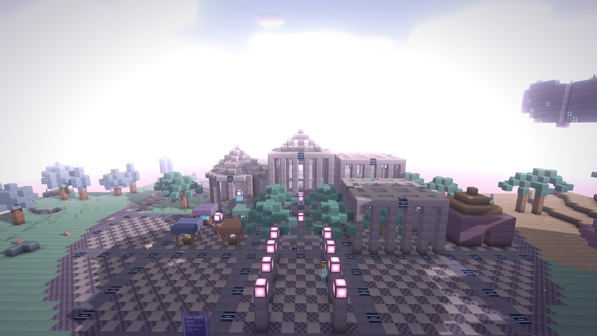
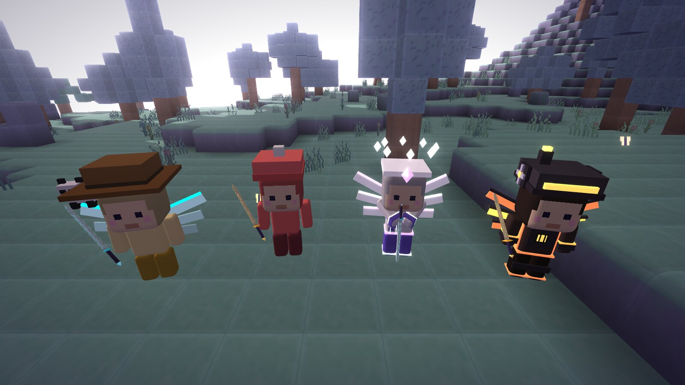
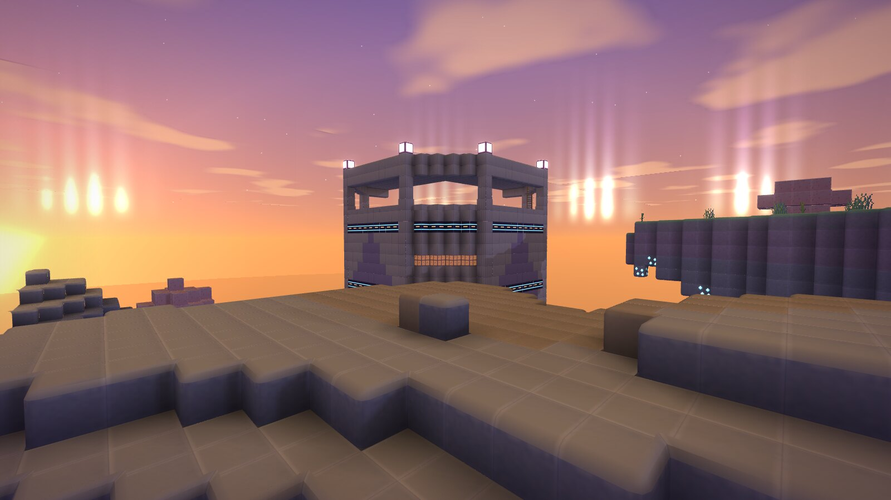
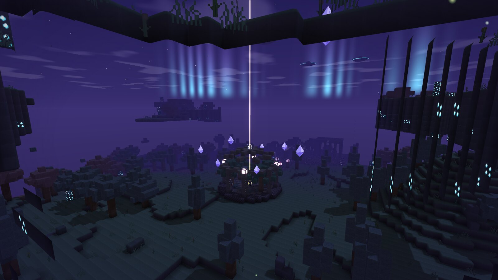
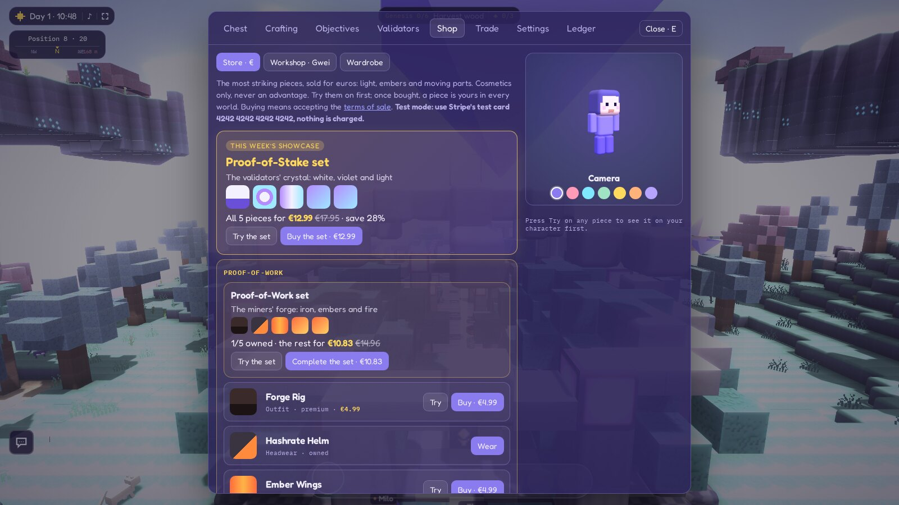
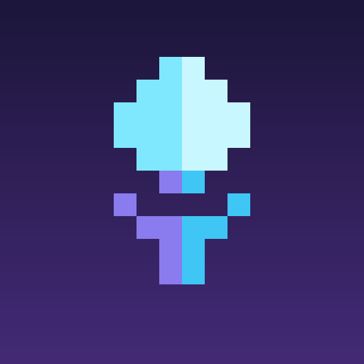
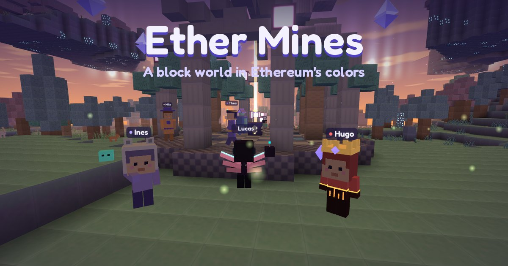

Ether Mines
A block world in Ethereum's colors, built with friends. Mine, craft and build in a soft, clay-like world inspired by ethereum.org's illustrations, where every block remembers who placed it.
Download everything (screenshots and logo, .zip)
Fact sheet
- Developer
- Pierre Untas, independent developer, France
- Platforms
- Web browser (desktop and mobile) · iPhone and Android apps coming
- Price
- Free. Optional cosmetic pieces, never an advantage
- Players
- Solo, or together in shared worlds
- Language
- English
- Website
- ethermines.org
- Contact
- contact@ethermines.org
About the game
Ether Mines is a Minecraft-style building game set in the world of Ethereum, playable for free in the browser with nothing to install. Players mine, craft and build in an endless world of plains, pink forests, dunes, floating islands and deep caves, then gather in shared worlds to relight the network's old validators together.
Ethereum's ideas are woven into the game rather than lectured: mining a block mints it, placing it burns it, and every placed block carries its author's name in a ledger anyone can read. Validators earn the game's own currency, Gwei; the twin guardians of the Merge Sanctum, Proof-of-Work and Proof-of-Stake, must be struck down together; a network attack calls every player to defend the Atrium.
Nothing touches a real blockchain: no wallet, no token, no cryptocurrency. Gwei are earned by playing and can't be bought. The only purchases are optional cosmetic pieces.
Features
- A soft, hand-made look: rounded clay blocks, pastel skies, an aurora at night, chibi characters, in the palette of ethereum.org's illustrations.
- An endless world: biomes, oceans, floating islands, caves with crystal geodes, ruins, gardens, guarded towers, and a City with its Ledger hall, library, market and greenhouse.
- A story in chapters, guided by Thea, the Atrium's guardian: from the first wooden pickaxe to the Merge Sanctum in the sky.
- Building and circuits: pastel concrete, stained glass, stairs and doors, levers, cables and logic gates (AND, OR, NOT, clocks) to make locks, blinkers and traps.
- Combat with timing: guard with a blade, and raise it just before a blow to parry and stun; critical blows from a jump; bosses with their own patterns.
- Together: shared worlds, chat, protected plots, trades between players, a shared goal for the whole server.
- A wardrobe: outfits, headwear, wings, companions and trails, earned, bought with Gwei, or as premium pieces; four saved outfits.
- Light on machines: runs in a phone's browser, synthesized sound, no download.
Screenshots
Click a picture for the full size (1600 × 900). Free to use in articles and videos about the game.










Logo and icon


App icon, 512 × 512

Banner, 1200 × 630Contact
For interviews, review access or anything else: contact@ethermines.org.
Ether Mines is inspired by ethereum.org's art style but is not affiliated with or endorsed by the Ethereum Foundation.
En français
Ether Mines est un jeu de construction façon Minecraft dans l'univers d'Ethereum, gratuit, jouable dans le navigateur sans rien installer, et bientôt sur iPhone et Android. On y mine, fabrique et construit dans un monde sans fin aux couleurs des illustrations d'ethereum.org, seul ou à plusieurs, pour rallumer ensemble les anciens validateurs du réseau. Les idées d'Ethereum sont dans le jeu lui-même : miner un bloc le crée, le poser le brûle, et chaque bloc posé garde le nom de son auteur dans un registre que tout le monde peut lire. Aucune vraie blockchain, aucun portefeuille, aucune cryptomonnaie : les seuls achats sont des pièces cosmétiques facultatives, sans aucun avantage de jeu.
Développé par Pierre Untas, développeur indépendant en France. Contact : contact@ethermines.org. Les captures et le logo ci-dessus sont libres d'utilisation pour parler du jeu.